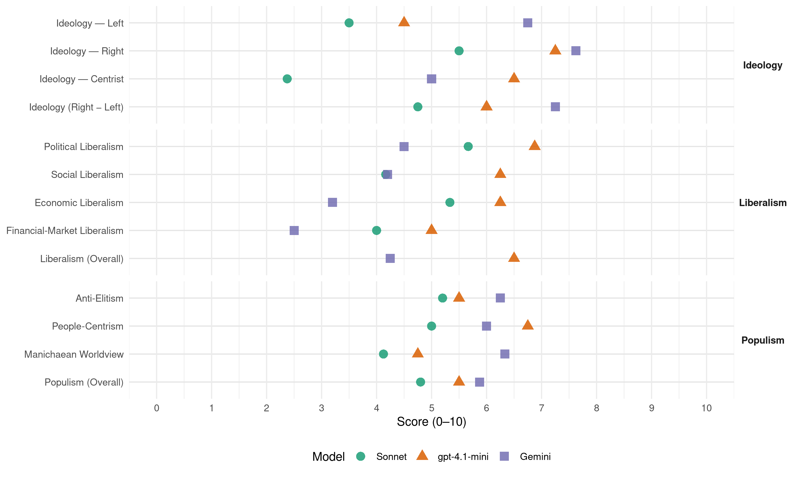

PiS (Poland, 2019)
manifesto_id 92436_201910
Get full text: This site shows derived annotations and short verbatim quotes only. The full manifesto text is © Manifesto Project / WZB — obtain it via manifesto-project.wzb.eu using the manifesto_id above.
Headline scores
| Dimension | Sonnet | gpt-4.1-mini | Gemini |
|---|---|---|---|
| Populism (Overall) | 4.8 | 5.5 | 5.9 |
| Anti-Elitism | 5.2 | 5.5 | 6.2 |
| People-Centrism | 5.0 | 6.8 | 6.0 |
| Manichaean Worldview | 4.1 | 4.8 | 6.3 |
| Ideology (Right − Left) | 4.8 | 6.0 | 7.2 |
| Liberalism (Overall) | – | 6.5 | 4.2 |
| Political Liberalism | 5.7 | 6.9 | 4.5 |
| Social Liberalism | 4.2 | 6.2 | 4.2 |
| Economic Liberalism | 5.3 | 6.2 | 3.2 |
| Financial-Market Liberalism | 4.0 | 5.0 | 2.5 |
Evidence per dimension
Economic Liberalism
Gemini · score 2.0 · verified · chunk 1
“Odrzucamy zasady neoliberalizmu”
Nie wierzymy, że „kapitał nie ma narodowości”. Odrzucamy zasady neoliberalizmu. Nowy model gospodarczy
Gemini · score 6.0 · mixed · chunk 2
“realizując zasady gospodarki rynkowej”
ramach demokracji, praworządności i realizując zasady gospodarki rynkowej. Jesteśmy jednak przekonani
Gemini · score 2.0 · verified · chunk 3
“zdrowie nie jest towarem, który podlega wyłącznie prawom wolnego rynku”
Prawo i Sprawiedliwość stoi na stanowisku, że zdrowie nie jest towarem, który podlega wyłącznie prawom wolnego rynku, a dobrem, które powinno być chronione przez państwo.
Gemini · score 6.0 · verified · chunk 4
“ułatwiające prowadzenie działalności wszystkim przedsiębiorcom”
gospodarczym, ułatwiające prowadzenie działalności wszystkim przedsiębiorcom, przede wszystkim tym
Gemini · score 3.0 · verified · chunk 5
“tworzeniem państwowego Holdingu Spożywczego, który będzie”
sfinalizujemy prace nad tworzeniem państwowego Holdingu Spożywczego, który będzie działał na rynku według uczciwych zasad
Gemini · score 3.0 · verified · chunk 6
“ochronę ziemi rolnej przed wykupem jej przez spekulacyjny kapitał”
zaproponujemy odpowiednie zmiany, by z jednej strony utrzymać, a nawet wzmocnić konieczną ochronę ziemi rolnej przed wykupem jej przez spekulacyjny kapitał, zwłaszcza zagraniczny
Gemini · score 6.0 · mixed · chunk 7
“wolność gospodarowania: wolność materializowania pomysłów”
ludzi przedsiębiorczych. Dlatego jesteśmy zobowiązani stworzyć im odpowiednie warunki pracy i rozwoju ich firm i biznesów. Podstawowym warunkiem powinna być wolność gospodarowania: wolność materializowania pomysłów biznesowych i wolność od
gpt-4.1-mini · score 5.0 · verified · chunk 1
“Jesteśmy przekonani, że przełamanie pułapki średniego rozwoju i odejście od modelu „zależnej gospodarki rynkowej” jest możliwe tylko dzięki czynnej polityce gospodarczej państwa.”
…ZMIANA MODELU GOSPODARCZEGO Jesteśmy przekonani, że przełamanie pułapki średniego rozwoju i odejście od modelu „zależnej gospodarki rynkowej” jest możliwe tylko dzięki czynnej polityce gospodarczej państwa. Nie wierzymy, że „kapitał nie ma narodowości”. Odrzucamy zasady neoliberalizmu…
gpt-4.1-mini · score 7.0 · verified · chunk 2
“zasady gospodarki rynkowej”
Musimy to uczynić w ramach demokracji, praworządności i realizując zasady gospodarki rynkowej. Jesteśmy jednak przekonani, że właśnie te prawidłowo działające mechanizmy, jeśli tylko spełniony jest podstawowy warunek ich funkcjonowania, jakim jest pełny dostęp do prawdy dla wszystkich obywateli, ostatecznie wyeliminują tę groźną dla naszej przyszłości patologię.
gpt-4.1-mini · score 6.0 · verified · chunk 3
“Polski model to połączenie solidaryzmu z budową proeksportowej, innowacyjnej gospodarki i polskiego kapitału”
Polski model to połączenie solidaryzmu z budową proeksportowej, innowacyjnej gospodarki i polskiego kapitału. To model, który zakłada zarówno opiekę państwa nad najbardziej potrzebującymi, jak i dążenie do zapewnienia dobrobytu dla wszystkich obywateli.
gpt-4.1-mini · score 7.0 · verified · chunk 4
“ulga podatkowa na wydatki na B+R oraz poszerzono preferencje dla inwestorów”
Wprowadzono m.in. ulgę podatkową na wydatki na B+R oraz poszerzono preferencje dla inwestorów w specjalnych strefach ekonomicznych na obszar całego państwa.
gpt-4.1-mini · score 7.0 · verified · chunk 5
“wspieranie przedsiębiorców, aby mogli skutecznie rywalizować z dynamicznie rozwijającą się globalną konkurencją”
… Dalsze wspieranie przedsiębiorców, aby mogli skutecznie rywalizować z dynamicznie rozwijającą się globalną konkurencją, to nasz priorytet. Będziemy wprowadzać kolejne ułatwienia legislacyjne, a także stwarzać polskim firmom jak najlepsze warunki do rozwoju …
gpt-4.1-mini · score 6.0 · verified · chunk 6
“Opowiadamy się za dużym budżetem Unii Europejskiej”
Opowiadamy się za dużym budżetem Unii Europejskiej, bowiem tylko on umożliwi zaprojektowanie takiej polityki spójności i Wspólnej Polityki Rolnej, które będą oparte na zasadach sprawiedliwości i równości (polityka rolna) oraz wspierania najbiedniejszych regionów Europy (polityka spójności). Opowiadamy się nadal za rozszerzeniem Unii o państwa Bałkanów Zachodnich oraz zarysowaniem realnych perspektyw dla państw Europy Wschodniej (Gruzja, Ukraina, Mołdawia).
gpt-4.1-mini · score 7.0 · verified · chunk 7
“Reforma prawa gospodarczego, polegającą przede wszystkim na ułatwieniach dla przedsiębiorców”
Prawo i Sprawiedliwość opowiada się za zwiększeniem obszaru wolności w gospodarce. Realizując postulat wolności gospodarczej, przeprowadziliśmy największą od 1989 roku reformę prawa gospodarczego, polegającą przede wszystkim na ułatwieniach dla przedsiębiorców.
gpt-4.1-mini · score 5.0 · verified · chunk 8
“wprowadziliśmy zachęty finansowe dla produkcji audiowizualnych”
W celu rozwoju produkcji filmowej rząd Prawa i Sprawiedliwości wprowadził w roku 2019 zachęty finansowe dla produkcji audiowizualnych spełniających specjalne kryteria kulturowe (chodzi ogólnie o powiązanie z Polską).
Sonnet · score 4.0 · mixed · chunk 1
“odrzucając etatyzm, tj. dążenie do upaństwowienia”
właśnie dlatego zdecydowanie odrzucając etatyzm, tj. dążenie do upaństwowienia szerokiej sfery życia społecznego, odrzucamy niezdolność państwa do podejmowania działań koniecznych
Sonnet · score 5.0 · mixed · chunk 2
“zasady gospodarki rynkowej”
Musimy to uczynić w ramach demokracji, praworządności i realizując zasady gospodarki rynkowej. Jesteśmy jednak przekonani, że właśnie te prawidłowo działające mechanizmy
Sonnet · score 4.0 · mixed · chunk 3
“neoliberalne podejście nie sprawdziło się”
Kryzys z 2008 roku udowodnił po pierwsze, że neoliberalne podejście nie sprawdziło się, po drugie miał miejsce największy w historii odpływ zagranicznego kapitału z Polski.
Sonnet · score 6.0 · verified · chunk 4
“obniżenie stawki podatku CIT do 9%”
Taką zmianą jest obniżenie stawki podatku CIT do 9%, które objęło około 440 tys. z około 509 tys., czyli prawie 90%, wszystkich podatników CIT w Polsce.
Sonnet · score 5.0 · mixed · chunk 5
“zasad uczciwej konkurencji”
w pełni wykorzystamy w tym zakresie uprawnienia państwa dotyczące zapewnienia zasad uczciwej konkurencji, zastosujemy też zasadę, że jakakolwiek pomoc publiczna
Sonnet · score 4.0 · mixed · chunk 6
“cztery wolności: przepływu kapitału, towarów, osób”
oparciu o cztery wolności: przepływu kapitału, towarów, osób i usług
Sonnet · score 6.0 · verified · chunk 7
“wolność materializowania pomysłów biznesowych”
Podstawowym warunkiem powinna być wolność gospodarowania: wolność materializowania pomysłów biznesowych i wolność od nadmiernych obciążeń podatkowych.
Sonnet · score 4.0 · verified · chunk 8
“zachęty finansowe dla produkcji audiowizualnych”
rząd Prawa i Sprawiedliwości wprowadził w roku 2019 zachęty finansowe dla produkcji audiowizualnych spełniających specjalne kryteria kulturowe
Financial-Market Liberalism
Gemini · score 3.0 · verified · chunk 2
“repolonizacji wielkiej części polskiego sektora bankowego”
przez środki europejskie: Centralny Port Komunikacyjny; rozbudowę portów morskich; Via Carpatię, czyli rozpoczęcie wielkiego przedsięwzięcia obliczonego na wiele lat, a zmierzającego do pełnego zabezpieczenia infrastrukturalnego Międzymorza i radykalnego ułatwienia współpracy gospodarczej na jego terytorium; wielkie inwestycje wodne (także rozpisane na wiele lat), mające przywrócić na terytorium Polski możliwości rozwoju ważnego przede wszystkim ze względu na niski koszt transportu wodnego; przekop Mierzei Wiślanej; działania zmierzające do stworzenia wielkiego koncernu petrochemicznego (tzn. połączenia Orlenu i Lotosu, co ma umożliwić wielkie inwestycje w przemysł chemiczny, a także w energetykę); programy budowy energetyki atomowej; programy związane z elektromobilnością; wreszcie inwestycje kapitałowe prowadzące do repolonizacji wielkiej części polskiego sektora bankowego.
Gemini · score 2.0 · verified · chunk 3
“udomowienie banku Pekao SA”
To inwestycje w sektorze finansowym umożliwiły udomowienie banku Pekao SA, który po latach na powrót stał się instytucją z dominującym udziałem polskiego kapitału.
Gemini · score 3.0 · verified · chunk 4
“repolonizacja polskiego sektora bankowego”
był m.in. zaangażowany w repolonizację polskiego sektora bankowego (odkupienie udziałów w
Gemini · score 2.0 · verified · chunk 6
“opowiedzieliśmy się za utrzymaniem złotego jako polskiej waluty narodowej”
Po pierwsze, opowiedzieliśmy się za utrzymaniem złotego jako polskiej waluty narodowej. Sprawie euro nadaliśmy sens ekonomiczny
gpt-4.1-mini · score 4.0 · verified · chunk 1
“Rząd Prawa i Sprawiedliwości niszcząc „przemysł VATowski” uderzył mocno w część głębokich struktur postkomunizmu.”
…Rząd Prawa i Sprawiedliwości, powołany w roku 2015, musiał jednak sprostać wielu wyzwaniom wynikającym z konieczności zdecydowanego odrzucenia polityki swoich poprzedników, odrzucenia systemu późnego postkomunizmu. Niszczycielskie działania w sferze finansów publicznych, w tym niszczenie „przemysłu VATowskiego”, uderzyły mocno w część głębokich struktur postkomunizmu…
gpt-4.1-mini · score 5.0 · mixed · chunk 2
“inwestycje kapitałowe prowadzące do repolonizacji wielkiej części polskiego sektora bankowego”
programy związane z elektromobilnością; wreszcie inwestycje kapitałowe prowadzące do repolonizacji wielkiej części polskiego sektora bankowego. Przedsięwzięciom tym służą nowe instytucje, w szczególności Polski Fundusz Rozwoju, ale także nowa polityka wobec spółek skarbu państwa.
gpt-4.1-mini · score 6.0 · verified · chunk 4
“udział polskiego kapitału w krajowym sektorze bankowym wynosił 54%”
Zgodnie z danymi KNF w 2018 roku udział polskiego kapitału w krajowym sektorze bankowym wynosił 54%. To wynik działań podjętych w ostatnich latach, które doprowadziły do repolonizacji w sektorze fi(Pekao, Alior, BPH), a także dobra wiadomość dla Polski – oznacza bowiem stabilizację w tym kluczowym dla gospodarki obszarze.
gpt-4.1-mini · score 5.0 · verified · chunk 6
“Będziemy konsekwentnie na forum Unii Europejskiej przeciwdziałało rozwiązaniom”
Będziemy konsekwentnie na forum Unii Europejskiej przeciwdziałało rozwiązaniom dla Polski i Polaków niekorzystnym, między innymi w polityce migracyjnej, rolnej, energetycznej, surowcowej, społecznej. Odrzucamy też wszelkie projekty federacyjne oraz dezintegracyjne („Europa kilku prędkości”). Dla nas Europa jest jedna dla wszystkich państw i narodów europejskich.
Sonnet · score 3.0 · verified · chunk 1
“mechanizmów ekonomicznych, finansowych i społecznych”
należy koniecznie napiętnować istnienie mechanizmów ekonomicznych, finansowych i społecznych, które, chociaż są kierowane wolą ludzi, działają w sposób jakby automatyczny, umacniają stan bogactwa jednych i ubóstwa drugich
Sonnet · score 4.0 · verified · chunk 2
“repolonizacji wielkiej części polskiego sektora bankowego”
inwestycje kapitałowe prowadzące do repolonizacji wielkiej części polskiego sektora bankowego. Przedsięwzięciom tym służą nowe instytucje, w szczególności Polski Fundusz Rozwoju
Sonnet · score 4.0 · verified · chunk 3
“udomowienie banku Pekao SA”
inwestycje w sektorze finansowym umożliwiły udomowienie banku Pekao SA, który po latach na powrót stał się instytucją z dominującym udziałem polskiego kapitału
Sonnet · score 4.0 · mixed · chunk 4
“repolonizacja sektora bankowego stanowi silny bufor”
Prowadzona przez Rząd Prawa i Sprawiedliwości repolonizacja sektora bankowego stanowi silny bufor bezpieczeństwa dla polskiej gospodarki przed potencjalnymi turbulencjami na międzynarodowych rynkach finansowych.
Sonnet · score 4.0 · verified · chunk 5
“ochrona ziemi rolnej przed wykupem jej przez spekulacyjny kapitał”
konieczną ochronę ziemi rolnej przed wykupem jej przez spekulacyjny kapitał, zwłaszcza zagraniczny, a z drugiej strony by ziemia rolna była dostępna dla prawdziwych i aktywnych rolników
Sonnet · score 4.0 · verified · chunk 6
“ochronę ziemi rolnej przed wykupem jej przez spekulacyjny kapitał”
utrzymać, a nawet wzmocnić konieczną ochronę ziemi rolnej przed wykupem jej przez spekulacyjny kapitał, zwłaszcza zagraniczny
Sonnet · score 5.0 · verified · chunk 7
“utrzymania złotego jako polskiej waluty narodowej”
taka perspektywa odnosi się przede wszystkim do utrzymania złotego jako polskiej waluty narodowej, pakietu energetyczno-klimatycznego, ochrony polskiej własności, polityki migracyjnej.
Political Liberalism
Gemini · score 4.0 · mixed · chunk 1
“Wymogi tego rodzaju może spełnić tylko państwo demokratyczne”
obywatelska równość. Wymogi tego rodzaju może spełnić tylko państwo demokratyczne. Odrzucamy zdecydowanie
Gemini · score 4.0 · mixed · chunk 2
“fundament demokracji, jakim jest wiarygodność”
zymując fundament demokracji, jakim jest wiarygodność, a także wykazując pełną determinację
Gemini · score 5.0 · verified · chunk 3
“Dojrzałe, solidarne państwo demokratyczne”
Dojrzałe, solidarne państwo demokratyczne powinno zmierzyć się z problemem nierównych płac
Gemini · score 4.0 · verified · chunk 5
“realne mechanizmy demokratyczne oraz pozwoli mu odróżnić”
pozwoli poznać i zrozumieć uregulowania prawne, jak i realne mechanizmy demokratyczne oraz pozwoli mu odróżnić manipulację od rzeczywistości.
Gemini · score 5.0 · verified · chunk 6
“stosownie do art. 23 Konstytucji”
wprowadzimy kompleksową ustawę o ochronie rodzinnych gospodarstw rolnych, stosownie do art. 23 Konstytucji, który stanowi, że podstawę ustroju rolnego Rzeczypospolitej stanowią gospodarstwa rodzinne
Gemini · score 5.0 · mixed · chunk 7
“wzmocnić w procesie decyzyjnym Unii rolę parlamentów”
przezwyciężą deficyt demokracji. Dlatego też należy wzmocnić w procesie decyzyjnym Unii rolę parlamentów państw członkowskich.
Gemini · score 4.0 · verified · chunk 8
“stworzenie warunków do funkcjonowania pluralistycznych, demokratycznych i inkluzywnych mediów”
W mijającej kadencji rozpoczęliśmy prace, które miały na celu stworzenie warunków do funkcjonowania pluralistycznych, demokratycznych i inkluzywnych mediów. Przygotowaliśmy grunt pod najbardziej
gpt-4.1-mini · score 7.0 · verified · chunk 1
“Tylko demokracja zapewnia jednostce podmiotowość, czyli bycie obywatelem, tylko w demokracji można budować równowagę sił społecznych, która umożliwia sprawiedliwą politykę i jest też warunkiem praworządności.”
…Tylko demokracja zapewnia jednostce podmiotowość, czyli bycie obywatelem, tylko w demokracji można budować równowagę sił społecznych, która umożliwia sprawiedliwą politykę i jest też warunkiem praworządności. Odrzucamy zdecydowanie często spotykane zarówno w historii idei, jak i w polityce przeciwstawianie bezpieczeństwa i wolności…
gpt-4.1-mini · score 6.0 · verified · chunk 2
“w ramach demokracji, praworządności i realizując zasady gospodarki rynkowej”
Musimy to uczynić w ramach demokracji, praworządności i realizując zasady gospodarki rynkowej. Jesteśmy jednak przekonani, że właśnie te prawidłowo działające mechanizmy, jeśli tylko spełniony jest podstawowy warunek ich funkcjonowania, jakim jest pełny dostęp do prawdy dla wszystkich obywateli, ostatecznie wyeliminują tę groźną dla naszej przyszłości patologię.
gpt-4.1-mini · score 7.0 · verified · chunk 3
“Tuż po odzyskaniu niepodległości Polki, jako jedne z pierwszych na świecie uzyskały prawa wyborcze”
W XX wieku wzrastała też rola kobiet w polskiej gospodarce i życiu politycznym. Tuż po odzyskaniu niepodległości Polki, jako jedne z pierwszych na świecie uzyskały prawa wyborcze. Kobiety i mężczyźni od zawsze pięknie się różnili i jednocześnie uzupełniali.
gpt-4.1-mini · score 7.0 · verified · chunk 4
“wprowadziliśmy nowoczesne e-usługi”
W ramach cyfryzacji państwa wprowadziliśmy nowoczesne e-usługi, z których coraz chętniej korzystają Polacy – w 2018 r. ponad 2,3 mln obywateli zawnioskowało przez Internet o świadczenie 500+ i 300+; w ciągu 3 miesięcy od uruchomienia usługi, ponad 223 tys. zawnioskowało o wydanie dowodu osobistego z warstwą elektroniczną; ponad 40 tys. zarejestrowało narodziny dziecka przez Internet.
gpt-4.1-mini · score 7.0 · verified · chunk 5
“przywrócono obowiązek szkolny od siódmego roku życia”
… rozszerzono edukację przedszkolną (w przedszkolach uczy się niemal 88% dzieci), przywrócono obowiązek szkolny od siódmego roku życia (pozostawiając rodzicom wolny wybór i możliwość posłania dziecka do szkoły w wieku sześciu lat), a system oświatowy tworzy ośmioletnia szkoła podstawowa …
gpt-4.1-mini · score 7.0 · verified · chunk 6
“Polska powinna zerwać z klientelizmem”
Polska powinna zerwać z klientelizmem. Przyjęliśmy, że obowiązkiem rządu Polski tworzonego przez Prawo i Sprawiedliwość jest formułowanie własnej koncepcji polityki zagranicznej, w której wyznacza się suwerennie pola działania w środowisku międzynarodowym oraz cele polityczne i interesy narodowe. Realnym i symbolicznym przedsięwzięciem pokazującym zmianę polityki zagranicznej Polski jest przekop Mierzei Wiślanej – decyzja podjęta suwerennie przez rząd Polski.
gpt-4.1-mini · score 7.0 · verified · chunk 7
“Będziemy dążyć do przestrzegania traktatów Unii Europejskiej”
Będziemy dążyć do przestrzegania traktatów Unii Europejskiej. Uważamy, że powinny być one przestrzegane na forum Unii Europejskiej zarówno przez instytucje europejskie, jak i wszystkie państwa członkowskie.
gpt-4.1-mini · score 7.0 · verified · chunk 8
“wprowadziliśmy „Karty Mediów”“
Doprecyzowując misję publiczną poprzez wprowadzenie „Karty Mediów”. W konsekwencji powstał transparentny system, dzięki któremu odbiorca jest w stanie rozliczyć każdą publiczną złotówkę wydaną przez nadawców.
Sonnet · score 4.0 · mixed · chunk 1
“Tylko demokracja zapewnia jednostce podmiotowość”
Tylko demokracja zapewnia jednostce podmiotowość, czyli bycie obywatelem, tylko w demokracji można budować równowagę sił społecznych, która umożliwia sprawiedliwą politykę
Sonnet · score 5.0 · mixed · chunk 2
“demokracji, praworządności i realizując zasady gospodarki rynkowej”
Musimy to uczynić w ramach demokracji, praworządności i realizując zasady gospodarki rynkowej. Jesteśmy jednak przekonani, że właśnie te prawidłowo działające mechanizmy
Sonnet · score 6.0 · verified · chunk 3
“Dojrzałe, solidarne państwo demokratyczne”
Dojrzałe, solidarne państwo demokratyczne powinno zmierzyć się z problemem nierównych płac kobiet i mężczyzn, wykonujących tę samą pracę
Sonnet · score 6.0 · verified · chunk 4
“raport Najwyższej Izby Kontroli”
Ten stan podsumował raport Najwyższej Izby Kontroli, w którym można m.in. przeczytać, że poziom luki VAT był w latach 2010–2015 znacznie wyższy niż średnio w UE
Sonnet · score 5.0 · verified · chunk 5
“realne mechanizmy demokratyczne”
Szkoła, zwłaszcza szkoła średnia, wyposaży młodego człowieka w wiedzę i umiejętności pozwalające poznać i zrozumieć uregulowania prawne, jak i realne mechanizmy demokratyczne
Sonnet · score 5.0 · mixed · chunk 6
“deficyt demokracji w instytucjach unijnych”
wywołują napięcia i obnażają deficyt demokracji w instytucjach unijnych. Dalszy rozwój Unii będzie możliwy
Sonnet · score 5.0 · mixed · chunk 7
“deficyt demokracji w instytucjach unijnych”
Takie działania pogłębiają tylko nierównowagę wewnętrzną, wywołują napięcia i obnażają deficyt demokracji w instytucjach unijnych.
Sonnet · score 5.0 · mixed · chunk 8
“pluralistycznych, demokratycznych i inkluzywnych mediów”
prace, które miały na celu stworzenie warunków do funkcjonowania pluralistycznych, demokratycznych i inkluzywnych mediów. Przygotowaliśmy grunt pod najbardziej oczekiwane reformy.
Liberalism (Overall)
Gemini · score 3.0 · verified · chunk 1
“Odrzucamy zasady neoliberalizmu”
Nie wierzymy, że „kapitał nie ma narodowości”. Odrzucamy zasady neoliberalizmu. Nowy model gospodarczy
Gemini · score 5.0 · verified · chunk 2
“realizując zasady gospodarki rynkowej”
ramach demokracji, praworządności i realizując zasady gospodarki rynkowej. Jesteśmy jednak przekonani
Gemini · score 4.0 · verified · chunk 3
“zdrowie nie jest towarem, który podlega wyłącznie prawom wolnego rynku”
Prawo i Sprawiedliwość stoi na stanowisku, że zdrowie nie jest towarem, który podlega wyłącznie prawom wolnego rynku, a dobrem, które powinno być chronione przez państwo.
Gemini · score 5.0 · verified · chunk 4
“ułatwiające prowadzenie działalności wszystkim przedsiębiorcom”
gospodarczym, ułatwiające prowadzenie działalności wszystkim przedsiębiorcom, przede wszystkim tym
Gemini · score 4.0 · verified · chunk 5
“realne mechanizmy demokratyczne oraz pozwoli mu odróżnić”
pozwoli poznać i zrozumieć uregulowania prawne, jak i realne mechanizmy demokratyczne oraz pozwoli mu odróżnić manipulację od rzeczywistości.
Gemini · score 3.0 · verified · chunk 6
“ochronę ziemi rolnej przed wykupem jej przez spekulacyjny kapitał”
zaproponujemy odpowiednie zmiany, by z jednej strony utrzymać, a nawet wzmocnić konieczną ochronę ziemi rolnej przed wykupem jej przez spekulacyjny kapitał, zwłaszcza zagraniczny
Gemini · score 5.0 · verified · chunk 7
“wolność gospodarowania: wolność materializowania pomysłów”
ludzi przedsiębiorczych. Dlatego jesteśmy zobowiązani stworzyć im odpowiednie warunki pracy i rozwoju ich firm i biznesów. Podstawowym warunkiem powinna być wolność gospodarowania: wolność materializowania pomysłów biznesowych i wolność od
Gemini · score 5.0 · verified · chunk 8
“stworzenie warunków do funkcjonowania pluralistycznych, demokratycznych i inkluzywnych mediów”
W mijającej kadencji rozpoczęliśmy prace, które miały na celu stworzenie warunków do funkcjonowania pluralistycznych, demokratycznych i inkluzywnych mediów. Przygotowaliśmy grunt pod najbardziej
gpt-4.1-mini · score 6.0 · verified · chunk 1
“Tylko demokracja zapewnia jednostce podmiotowość, czyli bycie obywatelem, tylko w demokracji można budować równowagę sił społecznych, która umożliwia sprawiedliwą politykę i jest też warunkiem praworządności.”
…Tylko demokracja zapewnia jednostce podmiotowość, czyli bycie obywatelem, tylko w demokracji można budować równowagę sił społecznych, która umożliwia sprawiedliwą politykę i jest też warunkiem praworządności. Odrzucamy zdecydowanie często spotykane zarówno w historii idei, jak i w polityce przeciwstawianie bezpieczeństwa i wolności…
gpt-4.1-mini · score 6.0 · verified · chunk 2
“w ramach demokracji, praworządności i realizując zasady gospodarki rynkowej”
Musimy to uczynić w ramach demokracji, praworządności i realizując zasady gospodarki rynkowej. Jesteśmy jednak przekonani, że właśnie te prawidłowo działające mechanizmy, jeśli tylko spełniony jest podstawowy warunek ich funkcjonowania, jakim jest pełny dostęp do prawdy dla wszystkich obywateli, ostatecznie wyeliminują tę groźną dla naszej przyszłości patologię.
gpt-4.1-mini · score 7.0 · verified · chunk 3
“Tuż po odzyskaniu niepodległości Polki, jako jedne z pierwszych na świecie uzyskały prawa wyborcze”
W XX wieku wzrastała też rola kobiet w polskiej gospodarce i życiu politycznym. Tuż po odzyskaniu niepodległości Polki, jako jedne z pierwszych na świecie uzyskały prawa wyborcze. Kobiety i mężczyźni od zawsze pięknie się różnili i jednocześnie uzupełniali.
gpt-4.1-mini · score 7.0 · verified · chunk 4
“wprowadziliśmy nowoczesne e-usługi”
W ramach cyfryzacji państwa wprowadziliśmy nowoczesne e-usługi, z których coraz chętniej korzystają Polacy – w 2018 r. ponad 2,3 mln obywateli zawnioskowało przez Internet o świadczenie 500+ i 300+; w ciągu 3 miesięcy od uruchomienia usługi, ponad 223 tys. zawnioskowało o wydanie dowodu osobistego z warstwą elektroniczną; ponad 40 tys. zarejestrowało narodziny dziecka przez Internet.
gpt-4.1-mini · score 7.0 · verified · chunk 5
“przywrócono obowiązek szkolny od siódmego roku życia”
… rozszerzono edukację przedszkolną (w przedszkolach uczy się niemal 88% dzieci), przywrócono obowiązek szkolny od siódmego roku życia (pozostawiając rodzicom wolny wybór i możliwość posłania dziecka do szkoły w wieku sześciu lat), a system oświatowy tworzy ośmioletnia szkoła podstawowa …
gpt-4.1-mini · score 6.0 · verified · chunk 6
“Opowiadamy się za dużym budżetem Unii Europejskiej”
Opowiadamy się za dużym budżetem Unii Europejskiej, bowiem tylko on umożliwi zaprojektowanie takiej polityki spójności i Wspólnej Polityki Rolnej, które będą oparte na zasadach sprawiedliwości i równości (polityka rolna) oraz wspierania najbiedniejszych regionów Europy (polityka spójności). Opowiadamy się nadal za rozszerzeniem Unii o państwa Bałkanów Zachodnich oraz zarysowaniem realnych perspektyw dla państw Europy Wschodniej (Gruzja, Ukraina, Mołdawia).
gpt-4.1-mini · score 7.0 · verified · chunk 7
“Prawo i Sprawiedliwość opowiada się za zwiększeniem obszaru wolności w gospodarce”
Prawo i Sprawiedliwość opowiada się za zwiększeniem obszaru wolności w gospodarce. Realizując postulat wolności gospodarczej, przeprowadziliśmy największą od 1989 roku reformę prawa gospodarczego, polegającą przede wszystkim na ułatwieniach dla przedsiębiorców.
gpt-4.1-mini · score 6.0 · verified · chunk 8
“wprowadziliśmy „Karty Mediów”“
Doprecyzowując misję publiczną poprzez wprowadzenie „Karty Mediów”. W konsekwencji powstał transparentny system, dzięki któremu odbiorca jest w stanie rozliczyć każdą publiczną złotówkę wydaną przez nadawców.
Sonnet · score 4.0 · mixed · chunk 1
“realizując zasady gospodarki rynkowej”
Musimy to uczynić w ramach demokracji, praworządności i realizując zasady gospodarki rynkowej. Jesteśmy jednak przekonani, że właśnie te prawidłowo działające mechanizmy
Sonnet · score 5.0 · mixed · chunk 2
“przestrzeni swobody gospodarczej”
uchylenie zakazów administracyjnych, stworzenie dużo większej niż dotychczas przestrzeni swobody gospodarczej; dotyczy to także rolnictwa. Odrębną, bardzo ważną kwestią, są działania zmierzające do budowy
Sonnet · score 5.0 · mixed · chunk 3
“zdrowie nie jest towarem, który podlega wyłącznie prawom wolnego rynku”
Prawo i Sprawiedliwość stoi na stanowisku, że zdrowie nie jest towarem, który podlega wyłącznie prawom wolnego rynku, a dobrem, które powinno być chronione przez państwo.
Sonnet · score 5.0 · mixed · chunk 5
“zasad uczciwej konkurencji”
w pełni wykorzystamy w tym zakresie uprawnienia państwa dotyczące zapewnienia zasad uczciwej konkurencji
Sonnet · score 4.0 · mixed · chunk 6
“cztery wolności: przepływu kapitału, towarów, osób”
oparciu o cztery wolności: przepływu kapitału, towarów, osób i usług
Sonnet · score 5.0 · mixed · chunk 7
“wolność gospodarowania”
Podstawowym warunkiem powinna być wolność gospodarowania: wolność materializowania pomysłów biznesowych i wolność od nadmiernych obciążeń podatkowych.
Sonnet · score 4.0 · mixed · chunk 8
“pluralistycznych, demokratycznych i inkluzywnych mediów”
prace, które miały na celu stworzenie warunków do funkcjonowania pluralistycznych, demokratycznych i inkluzywnych mediów.
Anti-Elitism
Gemini · score 8.0 · verified · chunk 1
“zwalczać fałszywie pojęty elitaryzm”
zasypywać podziały społeczne, zwalczać fałszywie pojęty elitaryzm, działać przeciwko wykluczeniu
Gemini · score 8.0 · verified · chunk 2
“odrzucenia systemu późnego postkomunizmu”
zdecydowanego odrzucenia polityki swoich poprzedników, odrzucenia systemu późnego postkomunizmu. Pierwsze wyzwanie
Gemini · score 6.0 · verified · chunk 3
“neoliberalny, „zależny” model rozwoju państwa”
Nasi poprzednicy przyjęli neoliberalny, „zależny” model rozwoju państwa, w którym rząd nie powinien przeszkadzać
Gemini · score 6.0 · verified · chunk 4
“bezradność instytucji publicznych”
co najważniejsze – bezradność instytucji publicznych. Według raportów różnych
Gemini · score 6.0 · verified · chunk 5
“bardzo złej polityki wobec wsi, prowadzonej przez poprzednie rządy”
warunki życia na wsi. Po latach bardzo złej polityki wobec wsi, prowadzonej przez poprzednie rządy PO-PSL, polityki lekceważenia i dyskryminacji
Gemini · score 7.0 · verified · chunk 6
“odrzuciliśmy model polityki zagranicznej i obronnej Polski prowadzonej przez rządy koalicji PO– PSL”
Zaproponowaliśmy Polakom nową politykę zagraniczną i obronną różniącą się w najważniejszych jej aspektach od „systemu PO–PSL”.
Gemini · score 4.0 · verified · chunk 7
“uprzywilejowane grupy interesów”
wszyscy Polacy, a nie – jak bywało wcześniej – przede wszystkim uprzywilejowane grupy interesów. Rządy PiS dowiodły
Gemini · score 5.0 · verified · chunk 8
“zawłaszczenia Europejskiego Centrum Solidarności w Gdańsku przez jedną opcje polityczną”
Uważamy, że na skutek zaniechań III Rzeczypospolitej i zawłaszczenia Europejskiego Centrum Solidarności w Gdańsku przez jedną opcje polityczną, która odmówiła podzielenia się odpowiedzialnością
gpt-4.1-mini · score 7.0 · verified · chunk 1
“Prawo i Sprawiedliwość prowadzi i będzie prowadzić politykę na rzecz najbardziej potrzebujących, zasypywać podziały społeczne, zwalczać fałszywie pojęty elitaryzm”
…zapewniać dostęp do dóbr kultury, edukacji, zdrowia, uczestnictwa w życiu publicznym bez względu na status społeczny i miejsce urodzenia. Prawo i Sprawiedliwość prowadzi i będzie prowadzić politykę na rzecz najbardziej potrzebujących, zasypywać podziały społeczne, zwalczać fałszywie pojęty elitaryzm, działać przeciwko wykluczeniu różnych grup społecznych; szczególnie zaś dbać o odpowiednią pozycję kobiet w społeczeństwie…
gpt-4.1-mini · score 7.0 · verified · chunk 2
“gotowość do podporządkowywania polityki państwa interesom najsilniejszych grup”
odrzucając radykalnie socjotechnikę jako metodę budowy relacji ze społeczeństwem, a co za tym idzie także gotowość do podporządkowywania polityki państwa interesom najsilniejszych grup – Prawo i Sprawiedliwość podjęło wielkie ryzyko.
gpt-4.1-mini · score 5.0 · verified · chunk 6
“Odrzuciliśmy: klientelizm nazwany „płynięciem w głównym nurcie””
Polska powinna zerwać z klientelizmem. Przyjęliśmy, że obowiązkiem rządu Polski tworzonego przez Prawo i Sprawiedliwość jest formułowanie własnej koncepcji polityki zagranicznej, w której wyznacza się suwerennie pola działania w środowisku międzynarodowym oraz cele polityczne i interesy narodowe. Odrzuciliśmy: klientelizm nazwany „płynięciem w głównym nurcie”, oznaczający nierespektowanie oczywistych interesów Polski; naiwność w postrzeganiu Unii Europejskiej (euroentuzjazm), sprowadzającą się do podporządkowania silniejszym państwom europejskim i zabiegania o kariery międzynarodowe dla polityków PO; pasywną politykę środkowoeuropejską i wschodnią połączoną z resetem w stosunkach z Rosją; rozluźnianie więzi sojuszniczych ze Stanami Zjednoczonymi Ameryki na rzecz mniemania, że odpowiedzialność za bezpieczeństwo Polski przejmie Unia Europejska zdominowana przez Niemcy (mowa „berlińska” R. Sikorskiego i nagrane na taśmach jego wypowiedzi) oraz oparta na współpracy niemiecko- francuskiej; pedagogikę wstydu wobec naszej przeszłości prowadzącą do relatywizmu historycznego w odniesieniu do prawdy o II wojnie światowej.
gpt-4.1-mini · score 3.0 · verified · chunk 7
“Odrzucamy też wszelkie projekty federacyjne oraz dezintegracyjne”
Prawo i Sprawiedliwość będzie konsekwentnie na forum Unii Europejskiej przeciwdziałało rozwiązaniom dla Polski i Polaków niekorzystnym, między innymi w polityce migracyjnej, rolnej, energetycznej, społecznej. Odrzucamy też wszelkie projekty federacyjne oraz dezintegracyjne („Europa kilku prędkości”).
Sonnet · score 8.0 · verified · chunk 1
“zwalczać fałszywie pojęty elitaryzm”
Prawo i Sprawiedliwość prowadzi i będzie prowadzić politykę na rzecz najbardziej potrzebujących, zasypywać podziały społeczne, zwalczać fałszywie pojęty elitaryzm, działać przeciwko wykluczeniu różnych grup społecznych
Sonnet · score 7.0 · verified · chunk 2
“opoką systemu postkomunizmu i późnego postkomunizmu”
sądownictwo, w którym po 1989 r. wprowadzono tylko pobieżne zmiany, stało się bardzo znaczącą, a wręcz może podstawową, szczególnie po roku 2000, opoką systemu postkomunizmu i późnego postkomunizmu. Oznaczało to niejednokrotnie ochronę patologii
Sonnet · score 4.0 · verified · chunk 4
“bezradność instytucji publicznych”
O wielkiej słabości państwa świadczyło nie tyle samo istnienie luki VAT czy CIT, co jej skala oraz – co najważniejsze – bezradność instytucji publicznych.
Sonnet · score 4.0 · verified · chunk 5
“polityki lekceważenia i dyskryminacji wsi i rolnictwa”
Po latach bardzo złej polityki wobec wsi, prowadzonej przez poprzednie rządy PO-PSL, polityki lekceważenia i dyskryminacji wsi i rolnictwa, polityki zgody na dyskryminację polskich rolników
Sonnet · score 3.0 · verified · chunk 7
“uprzywilejowane grupy interesów”
Z owoców wzrostu gospodarczego muszą korzystać wszyscy Polacy, a nie – jak bywało wcześniej – przede wszystkim uprzywilejowane grupy interesów.
Sonnet · score 3.0 · mixed · chunk 8
“zawłaszczenia Europejskiego Centrum Solidarności w Gdańsku przez jedną opcje polityczną”
Uważamy, że na skutek zaniechań III Rzeczypospolitej i zawłaszczenia Europejskiego Centrum Solidarności w Gdańsku przez jedną opcje polityczną, która odmówiła podzielenia się odpowiedzialnością
Ideology — Centrist
Gemini · score 5.0 · verified · chunk 2
“zabezpieczyć Polskę przed nawrotem choroby”
zwyciężyć w kolejnych wyborach, rozszerzyć front „Dobrej Zmiany” i ostatecznie zabezpieczyć Polskę przed nawrotem choroby, która ją dotknęła.
gpt-4.1-mini · score 7.0 · verified · chunk 1
“Polacy, jako jednostki i jako naród, mają szczególne upodobanie w wolności. Przez wieki i współcześnie udowodniliśmy, że nie pozwalamy jej sobie odebrać.”
…Polacy, jako jednostki i jako naród, mają szczególne upodobanie w wolności. Przez wieki i współcześnie udowodniliśmy, że nie pozwalamy jej sobie odebrać. Opieramy się społecznej inżynierii, która charakteryzuje niektóre społeczeństwa i odziera człowieka z jego godności…
gpt-4.1-mini · score 7.0 · verified · chunk 2
“władza decyduje w wyborach społeczeństwo, poprzez parlament”
Zgodę na to, że o kształcie władzy decyduje w wyborach społeczeństwo, poprzez parlament, który, uchwalając ustawy, wykonuje jego wolę, która jest obowiązująca dla sądów.
gpt-4.1-mini · score 6.0 · verified · chunk 6
“Polska powinna zerwać z klientelizmem”
Polska powinna zerwać z klientelizmem. Przyjęliśmy, że obowiązkiem rządu Polski tworzonego przez Prawo i Sprawiedliwość jest formułowanie własnej koncepcji polityki zagranicznej, w której wyznacza się suwerennie pola działania w środowisku międzynarodowym oraz cele polityczne i interesy narodowe.
gpt-4.1-mini · score 6.0 · verified · chunk 7
“Europa nie potrzebuje ani rewolucji kulturalnej, ani inżynierii społecznej”
Dla nas Europa jest jedna dla wszystkich państw i narodów europejskich. Europa nie potrzebuje ani rewolucji kulturalnej, ani inżynierii społecznej. Europa potrzebuje normalnych stosunków społecznych, wynikających z tradycji narodów europejskich i kultury chrześcijańskiej.
Sonnet · score 2.0 · verified · chunk 1
“Odrzucamy zasady neoliberalizmu”
Nie wierzymy, że »kapitał nie ma narodowości«. Odrzucamy zasady neoliberalizmu. Nowy model gospodarczy wymaga właściwego rozpoznania i następnie wykorzystania zasobów
Sonnet · score 3.0 · verified · chunk 2
“suwerenności ludu, czyli społeczeństwa, jest odrzucana”
W tym modelu w centrum ustroju RP są sądy i to one w istocie są suwerenem. Zasada suwerenności ludu, czyli społeczeństwa, jest odrzucana.
Sonnet · score 3.0 · verified · chunk 3
“dobrobyt dla wszystkich obywateli”
To model, który zakłada zarówno opiekę państwa nad najbardziej potrzebującymi, jak i dążenie do zapewnienia dobrobytu dla wszystkich obywateli.
Sonnet · score 2.0 · verified · chunk 4
“nie interwencjonizm, a inteligentne wsparcie”
aktywna polityka gospodarcza, której założeniem jednak jest nie interwencjonizm, a inteligentne wsparcie kluczowych sektorów gospodarki
Sonnet · score 2.0 · verified · chunk 5
“Dalsze wspieranie przedsiębiorców, aby mogli skutecznie rywalizować”
Dalsze wspieranie przedsiębiorców, aby mogli skutecznie rywalizować z dynamicznie rozwijającą się globalną konkurencją, to nasz priorytet.
Sonnet · score 3.0 · verified · chunk 6
“głos mieszkańców wsi i respektować ich słuszne prawa”
będziemy wsłuchiwać się w głos mieszkańców wsi i respektować ich słuszne prawa i interesy
Sonnet · score 2.0 · verified · chunk 7
“naszym celem jest zbudowanie nowoczesnego systemu”
Naszym celem jest zbudowanie nowoczesnego systemu zarządzania kadrami polskiej dyplomacji, w tym dyplomacji ekonomicznej.
Sonnet · score 2.0 · verified · chunk 8
“Obowiązkiem rządu jest tworzenie przestrzeni”
BOGACTWEM POLSKI JEST JEJ SPOŁECZEŃSTWO Obowiązkiem rządu jest tworzenie przestrzeni dla aktywności społecznej różnych środowisk.
Ideology — Left
Gemini · score 7.0 · verified · chunk 1
“nie dla ekonomii wykluczenia i nierówności społecznej”
dzisiaj musimy powiedzieć »nie« dla ekonomii wykluczenia i nierówności społecznej. Ta ekonomia zabija.
Gemini · score 7.0 · verified · chunk 2
“daleko idącą redystrybucję dóbr na rzecz”
chodzi o politykę społeczną, czyli daleko idącą redystrybucję dóbr na rzecz rodzin wychowujących dzieci
Gemini · score 7.0 · verified · chunk 3
“połączenie solidaryzmu z budową proeksportowej, innowacyjnej gospodarki”
Polski model to połączenie solidaryzmu z budową proeksportowej, innowacyjnej gospodarki i polskiego kapitału.
Gemini · score 6.0 · verified · chunk 7
“wspierania najbiedniejszych regionów Europy”
zasadach sprawiedliwości i równości (polityka rolna) oraz wspierania najbiedniejszych regionów Europy (polityka spójności).
gpt-4.1-mini · score 6.0 · verified · chunk 1
“Opowiadamy się za tak pojętą sprawiedliwością społeczną, staramy się ją realizować w Polsce, odwołując się do nauki społecznej Kościoła powszechnego.”
…Sprawiedliwość dotyczy jednak nie tylko relacji między jednostkami oraz jednostkami i instytucjami, lecz także samych zasad ładu społecznego… Opowiadamy się za tak pojętą sprawiedliwością społeczną, staramy się ją realizować w Polsce, odwołując się do nauki społecznej Kościoła powszechnego...
gpt-4.1-mini · score 6.0 · verified · chunk 2
“politykę społeczną, czyli daleko idącą redystrybucję dóbr na rzecz rodzin wychowujących dzieci”
Po czwarte, chodzi o politykę społeczną, czyli daleko idącą redystrybucję dóbr na rzecz rodzin wychowujących dzieci, ludzi w wieku starszym, emerytów, osób niepełnosprawnych, a także równoległą do niej politykę zmierzającą do podnoszenia płac.
gpt-4.1-mini · score 3.0 · verified · chunk 6
“wprowadzimy kompleksową ustawę o ochronie rodzinnych gospodarstw rolnych”
Wzmocnimy prawną ochronę gospodarstw rodzinnych. wprowadzimy kompleksową ustawę o ochronie rodzinnych gospodarstw rolnych, stosownie do art. 23 Konstytucji, który stanowi, że podstawę ustroju rolnego Rzeczypospolitej stanowią gospodarstwa rodzinne; w prawie dotyczącym ochrony gospodarstw rodzinnych wprowadzimy zasadę, że wszelkie środki publiczne, krajowe i europejskie, przeznaczone na wsparcie dla gospodarstw rolnych, będą w pierwszej kolejności kierowane do gospodarstw rodzinnych, co powinno sprzyjać utrzymaniu się tych gospodarstw i powstrzymać szkodliwy gospodarczo i społecznie proces „latyfundyzacji” wsi;
gpt-4.1-mini · score 3.0 · verified · chunk 7
“Polska solidarna jest nie tylko możliwa, ale powszechnie akceptowana”
Rządy PiS dowiodły, że Polska solidarna jest nie tylko możliwa, ale powszechnie akceptowana przez społeczeństwo. Obaliliśmy mit niemożności, wykazując, że aktywne państwo jest w stanie skutecznie dbać o dobro wspólne.
Sonnet · score 3.0 · verified · chunk 1
“ekonomii wykluczenia i nierówności społecznej”
musimy powiedzieć »nie« dla ekonomii wykluczenia i nierówności społecznej. Ta ekonomia zabija. Prawo sprzyja silniejszemu, więc możny pożera słabszego
Sonnet · score 6.0 · verified · chunk 2
“wielkim programem redystrybucyjnym”
Polityka społeczna, o której mowa, była w istocie wielkim programem redystrybucyjnym. Warto pokreślić, że wskaźnik Giniego, którego niższy odczyt pokazuje mniejsze nierówności społeczne
Sonnet · score 5.0 · verified · chunk 3
“Zmniejszyły się nierówności społeczne”
Obniżanie deficytu budżetowego i długu publicznego idzie w parze z wysokim rozwojem gospodarczym. Zmniejszyły się nierówności społeczne, mierzone według różnych indeksów
Sonnet · score 2.0 · verified · chunk 4
“wsparcie zakładów przemysłowych”
Podejmiemy działania mające na celu wsparcie zakładów przemysłowych – szczególnie tych, które położone są na terenach zmarginalizowanych
Sonnet · score 3.0 · verified · chunk 5
“ochrona ziemi rolnej przed wykupem jej przez spekulacyjny kapitał”
by z jednej strony utrzymać, a nawet wzmocnić konieczną ochronę ziemi rolnej przed wykupem jej przez spekulacyjny kapitał, zwłaszcza zagraniczny
Sonnet · score 4.0 · verified · chunk 6
“ochronę ziemi rolnej przed wykupem jej przez spekulacyjny kapitał”
utrzymać, a nawet wzmocnić konieczną ochronę ziemi rolnej przed wykupem jej przez spekulacyjny kapitał, zwłaszcza zagraniczny
Sonnet · score 4.0 · verified · chunk 7
“solidaryzmu społecznego”
Polska pod rządami PiS została oparta na zasadzie solidaryzmu społecznego, która była ważnym elementem programu śp. Prezydenta Prof. Lecha Kaczyńskiego.
Sonnet · score 1.0 · verified · chunk 8
“Będziemy wspierać, także finansowo, koła gospodyń wiejskich”
Będziemy wspierać, także finansowo, koła gospodyń wiejskich, ochotnicze straże pożarne, uniwersytety ludowe, domy i kluby seniora
Ideology (Right − Left)
Gemini · score 8.0 · verified · chunk 1
“szerzenie ideologii gender. Jej rozpowszechnianie ma charakter sztuczny”
groźne dla rodziny i rodzicielstwa w Polsce jest też szerzenie ideologii gender. Jej rozpowszechnianie ma charakter sztuczny, warunkowany
Gemini · score 8.0 · verified · chunk 2
“trwania narodu polskiego jako swoistego”
rozszerzyła jeszcze pole sporu o kwestię trwania narodu polskiego jako swoistego i oddzielnego od innych
Gemini · score 7.0 · verified · chunk 3
“połączenie solidaryzmu z budową proeksportowej, innowacyjnej gospodarki”
Polski model to połączenie solidaryzmu z budową proeksportowej, innowacyjnej gospodarki i polskiego kapitału.
Gemini · score 7.0 · verified · chunk 4
“Kapitał ma narodowość”
obserwować jego strukturę własnościową. Kapitał ma narodowość, a kryzys
Gemini · score 7.0 · verified · chunk 5
“ostoją wartości patriotycznych, chrześcijańskich, narodowych”
Polska wieś w historii i współcześnie była i jest ostoją wartości patriotycznych, chrześcijańskich, narodowych. Wielkie dziedzictwo
Gemini · score 8.0 · verified · chunk 6
“ochronę ziemi rolnej przed wykupem jej przez spekulacyjny kapitał, zwłaszcza zagraniczny”
zaproponujemy odpowiednie zmiany, by z jednej strony utrzymać, a nawet wzmocnić konieczną ochronę ziemi rolnej przed wykupem jej przez spekulacyjny kapitał, zwłaszcza zagraniczny
Gemini · score 7.0 · verified · chunk 7
“niszczenia polskiej tożsamości narodowej”
nie mogą być podstawą dla niszczenia polskiej tożsamości narodowej, tradycji, kultury, modelu życia
Gemini · score 6.0 · verified · chunk 8
“kształtowanie i wzmacnianie tożsamości polskiej wspólnoty politycznej”
Wielkim wyzwaniem współczesności jest kształtowanie i wzmacnianie tożsamości polskiej wspólnoty politycznej. Każdy naród i państwo potrzebuje
gpt-4.1-mini · score 7.0 · verified · chunk 1
“Prawo i Sprawiedliwość prowadzi i będzie prowadzić politykę na rzecz najbardziej potrzebujących, zasypywać podziały społeczne, zwalczać fałszywie pojęty elitaryzm”
…zapewniać dostęp do dóbr kultury, edukacji, zdrowia, uczestnictwa w życiu publicznym bez względu na status społeczny i miejsce urodzenia. Prawo i Sprawiedliwość prowadzi i będzie prowadzić politykę na rzecz najbardziej potrzebujących, zasypywać podziały społeczne, zwalczać fałszywie pojęty elitaryzm, działać przeciwko wykluczeniu różnych grup społecznych; szczególnie zaś dbać o odpowiednią pozycję kobiet w społeczeństwie…
gpt-4.1-mini · score 7.0 · verified · chunk 2
“gotowość do podporządkowywania polityki państwa interesom najsilniejszych grup”
odrzucając radykalnie socjotechnikę jako metodę budowy relacji ze społeczeństwem, a co za tym idzie także gotowość do podporządkowywania polityki państwa interesom najsilniejszych grup – Prawo i Sprawiedliwość podjęło wielkie ryzyko.
gpt-4.1-mini · score 5.0 · verified · chunk 6
“Odrzuciliśmy: klientelizm nazwany „płynięciem w głównym nurcie””
Polska powinna zerwać z klientelizmem. Przyjęliśmy, że obowiązkiem rządu Polski tworzonego przez Prawo i Sprawiedliwość jest formułowanie własnej koncepcji polityki zagranicznej, w której wyznacza się suwerennie pola działania w środowisku międzynarodowym oraz cele polityczne i interesy narodowe. Odrzuciliśmy: klientelizm nazwany „płynięciem w głównym nurcie”, oznaczający nierespektowanie oczywistych interesów Polski; naiwność w postrzeganiu Unii Europejskiej (euroentuzjazm), sprowadzającą się do podporządkowania silniejszym państwom europejskim i zabiegania o kariery międzynarodowe dla polityków PO; pasywną politykę środkowoeuropejską i wschodnią połączoną z resetem w stosunkach z Rosją; rozluźnianie więzi sojuszniczych ze Stanami Zjednoczonymi Ameryki na rzecz mniemania, że odpowiedzialność za bezpieczeństwo Polski przejmie Unia Europejska zdominowana przez Niemcy (mowa „berlińska” R. Sikorskiego i nagrane na taśmach jego wypowiedzi) oraz oparta na współpracy niemiecko- francuskiej; pedagogikę wstydu wobec naszej przeszłości prowadzącą do relatywizmu historycznego w odniesieniu do prawdy o II wojnie światowej.
gpt-4.1-mini · score 5.0 · verified · chunk 7
“Odrzucamy też wszelkie projekty federacyjne oraz dezintegracyjne”
Prawo i Sprawiedliwość będzie konsekwentnie na forum Unii Europejskiej przeciwdziałało rozwiązaniom dla Polski i Polaków niekorzystnym, między innymi w polityce migracyjnej, rolnej, energetycznej, społecznej. Odrzucamy też wszelkie projekty federacyjne oraz dezintegracyjne („Europa kilku prędkości”).
Sonnet · score 7.0 · verified · chunk 1
“Groźba powrotu skrajnie niesprawiedliwego i nieefektywnego ustroju”
Groźba powrotu skrajnie niesprawiedliwego i nieefektywnego ustroju jest ciągle aktualna. Od nas zależy, czy podtrzymując fundament demokracji, jakim jest wiarygodność
Sonnet · score 7.0 · verified · chunk 2
“trwania narodu polskiego jako swoistego i oddzielnego”
rozszerzyła jeszcze pole sporu o kwestię trwania narodu polskiego jako swoistego i oddzielnego od innych fenomenu kulturowego, o kwestię istnienia najbardziej podstawowych zasad naszej wspólnoty
Sonnet · score 4.0 · verified · chunk 3
“połączenie solidaryzmu z budową proeksportowej, innowacyjnej gospodarki”
Polski model to połączenie solidaryzmu z budową proeksportowej, innowacyjnej gospodarki i polskiego kapitału.
Sonnet · score 2.0 · verified · chunk 4
“Polski kapitalizm potrzebuje wsparcia”
Polski kapitalizm potrzebuje wsparcia ze strony państwa, a nie tworzenia formalnych barier.
Sonnet · score 4.0 · verified · chunk 5
“Polska wieś w historii i współcześnie była i jest ostoją wartości patriotycznych”
Polska wieś w historii i współcześnie była i jest ostoją wartości patriotycznych, chrześcijańskich, narodowych.
Sonnet · score 5.0 · verified · chunk 6
“ochronę ziemi rolnej przed wykupem jej przez spekulacyjny kapitał”
utrzymać, a nawet wzmocnić konieczną ochronę ziemi rolnej przed wykupem jej przez spekulacyjny kapitał, zwłaszcza zagraniczny
Sonnet · score 5.0 · verified · chunk 7
“tradycji narodów europejskich i kultury chrześcijańskiej”
Europa potrzebuje normalnych stosunków społecznych, wynikających z tradycji narodów europejskich i kultury chrześcijańskiej.
Sonnet · score 4.0 · verified · chunk 8
“utrwalania i obrony tożsamości narodowej i państwowej”
udało się w Polsce stworzyć mocne podstawy instytucjonalne dla utrwalania i obrony tożsamości narodowej i państwowej. Wymagają one dalszego rozwoju
Ideology — Right
Gemini · score 9.0 · verified · chunk 1
“szerzenie ideologii gender. Jej rozpowszechnianie ma charakter sztuczny”
groźne dla rodziny i rodzicielstwa w Polsce jest też szerzenie ideologii gender. Jej rozpowszechnianie ma charakter sztuczny, warunkowany
Gemini · score 8.0 · verified · chunk 2
“trwania narodu polskiego jako swoistego”
rozszerzyła jeszcze pole sporu o kwestię trwania narodu polskiego jako swoistego i oddzielnego od innych
Gemini · score 7.0 · verified · chunk 3
“dominującym udziałem polskiego kapitału”
udomowienie banku Pekao SA, który po latach na powrót stał się instytucją z dominującym udziałem polskiego kapitału.
Gemini · score 7.0 · verified · chunk 4
“Kapitał ma narodowość”
obserwować jego strukturę własnościową. Kapitał ma narodowość, a kryzys
Gemini · score 7.0 · verified · chunk 5
“ostoją wartości patriotycznych, chrześcijańskich, narodowych”
Polska wieś w historii i współcześnie była i jest ostoją wartości patriotycznych, chrześcijańskich, narodowych. Wielkie dziedzictwo
Gemini · score 8.0 · verified · chunk 6
“ochronę ziemi rolnej przed wykupem jej przez spekulacyjny kapitał, zwłaszcza zagraniczny”
zaproponujemy odpowiednie zmiany, by z jednej strony utrzymać, a nawet wzmocnić konieczną ochronę ziemi rolnej przed wykupem jej przez spekulacyjny kapitał, zwłaszcza zagraniczny
Gemini · score 8.0 · verified · chunk 7
“niszczenia polskiej tożsamości narodowej”
nie mogą być podstawą dla niszczenia polskiej tożsamości narodowej, tradycji, kultury, modelu życia
Gemini · score 7.0 · verified · chunk 8
“kształtowanie i wzmacnianie tożsamości polskiej wspólnoty politycznej”
Wielkim wyzwaniem współczesności jest kształtowanie i wzmacnianie tożsamości polskiej wspólnoty politycznej. Każdy naród i państwo potrzebuje
gpt-4.1-mini · score 7.0 · verified · chunk 1
“Rodzina, opierająca się na trwałym związku kobiety i mężczyzny, jest podstawą życia społecznego… Prawo i Sprawiedliwość będzie stanowczo bronić rodziny naturalnej”
…Rodzina, opierająca się na trwałym związku kobiety i mężczyzny, jest podstawą życia społecznego… Prawo i Sprawiedliwość będzie stanowczo bronić rodziny naturalnej, w tym jej kształcie i rozumieniu, które cechuje cywilizację zachodnią…
gpt-4.1-mini · score 8.0 · verified · chunk 2
“odrzucenie klientyzm, zasadę, że niezależnie od polskich interesów”
W polityce zagranicznej odrzucono zdecydowanie klientyzm, zasadę, że niezależnie od polskich interesów, nawet najbardziej oczywistych, musimy znajdować się w tzw. głównym nurcie europejskim.
gpt-4.1-mini · score 7.0 · verified · chunk 6
“zabezpieczyliśmy obrót ziemią w Polsce po 2016 roku”
Po drugie, zabezpieczyliśmy obrót ziemią w Polsce po 2016 roku w kierunku zabezpieczenia tego zasobu przed swobodnym przejęciem przez kapitał zagraniczny, między innymi w celach spekulacyjnych. Priorytetem jest ochrona polskiej własności.
gpt-4.1-mini · score 7.0 · verified · chunk 7
“Przepisy traktatowe Unii Europejskiej nie mogą być podstawą dla niszczenia polskiej tożsamości narodowej”
Przepisy traktatowe Unii Europejskiej nie mogą być podstawą dla niszczenia polskiej tożsamości narodowej, tradycji, kultury, modelu życia i obyczajów. Odrzucamy wszelkie eksperymenty kulturowe, wyrażając w tej sprawie wolę zdecydowanej większości narodu.
Sonnet · score 8.0 · verified · chunk 1
“zastąpić narody wielokulturowym społeczeństwem”
Pojawiło się w Europie dążenie, aby zastąpić narody wielokulturowym społeczeństwem; integrację europejską pojmuje się błędnie jako budowę nowej europejskiej tożsamości
Sonnet · score 7.0 · verified · chunk 2
“skuteczny sprzeciw wobec przymusowej relokacji imigrantów”
Wyrazem nowej, realizowanej przez Prawo i Sprawiedliwość, polityki był m.in. skuteczny sprzeciw wobec przymusowej relokacji imigrantów, skuteczne przeciwstawienie się wyborowi Fransa Timmermansa
Sonnet · score 4.0 · verified · chunk 3
“polskiego kapitału”
Polski model to połączenie solidaryzmu z budową proeksportowej, innowacyjnej gospodarki i polskiego kapitału.
Sonnet · score 3.0 · verified · chunk 4
“repolonizację polskiego sektora bankowego”
Polski Fundusz Rozwoju był m.in. zaangażowany w repolonizację polskiego sektora bankowego (odkupienie udziałów w banku Pekao SA od włoskiego Unicredit).
Sonnet · score 5.0 · verified · chunk 5
“kształtowanie poczucia tożsamości narodowej i państwowej”
Kształtowanie poczucia tożsamości narodowej i państwowej będzie stałym i ważnym elementem programu działalności polskiej szkoły.
Sonnet · score 6.0 · verified · chunk 6
“kapitał zagraniczny, między innymi w celach spekulacyjnych”
zabezpieczenia tego zasobu przed swobodnym przejęciem przez kapitał zagraniczny, między innymi w celach spekulacyjnych
Sonnet · score 6.0 · verified · chunk 7
“tradycji narodów europejskich i kultury chrześcijańskiej”
Europa potrzebuje normalnych stosunków społecznych, wynikających z tradycji narodów europejskich i kultury chrześcijańskiej.
Sonnet · score 5.0 · verified · chunk 8
“kształtowanie i wzmacnianie tożsamości polskiej wspólnoty politycznej”
Wielkim wyzwaniem współczesności jest kształtowanie i wzmacnianie tożsamości polskiej wspólnoty politycznej. Każdy naród i państwo potrzebuje spójnej
Manichaean Worldview
Gemini · score 8.0 · verified · chunk 1
“nauki moralnej Kościoła można przeciwstawić tylko nihilizm”
twierdzenie, że w Polsce nauce moralnej Kościoła można przeciwstawić tylko nihilizm. Znamy to z historii
Gemini · score 8.0 · verified · chunk 2
“ochronę patologii i mechanizmów antyrozwojowych”
późnego postkomunizmu. Oznaczało to niejednokrotnie ochronę patologii i mechanizmów antyrozwojowych, a niekiedy nawet
Gemini · score 6.0 · verified · chunk 3
“walka z mafiami lekowymi”
WALKA Z MAFIAMI LEKOWYMI I URZĄD NADZORU FARMACEUTYCZNEGO Dostępność leków ma zasadnicze znaczenie
Gemini · score 6.0 · verified · chunk 4
“zmaganiach z przestępcami podatkowymi i mafiami”
sukcesy rządu Prawa i Sprawiedliwości w zmaganiach z przestępcami podatkowymi i mafiami VAT. Ten stan
Gemini · score 5.0 · verified · chunk 6
“praktyk nieuczciwych i oszukujące rolników”
a podmioty dopuszczające się praktyk nieuczciwych i oszukujące rolników będą wykluczane z pomocy publicznej
Gemini · score 5.0 · verified · chunk 7
“przemocy ideologicznej i politycznej”
presji ekonomicznej, ale także przemocy ideologicznej i politycznej, wielkim wyzwaniem naszych czasów
gpt-4.1-mini · score 6.0 · verified · chunk 1
“Władze koalicji PO-PSL dysponowały dużymi możliwościami wpływu w sądownictwie… system określony celnie przez Prezydenta Lecha Kaczyńskiego jako państwo silne wobec słabych i słabe wobec silnych.”
…Łamano prawo także poprzez bezczynność… Można powiedzieć, że w pełni realizowano system określony celnie przez Prezydenta Lecha Kaczyńskiego jako państwo silne wobec słabych i słabe wobec silnych. Wreszcie bardzo charakterystycznymi i brzemiennymi w skutki były dwie inne praktyki…
gpt-4.1-mini · score 7.0 · verified · chunk 2
“ulica i zagranica”
W najkrócej mówiąc, celem całego działania było podtrzymanie postkomunizmu, przeprowadzone innymi metodami niż opisana powyżej próba. Wiązał się z tym jawnie deklarowany cel obalenia władzy – legalnego rządu – przy pomocy akcji społecznych i interwencji zewnętrznej. Ujęto to wprost w haśle „ulica i zagranica”.
gpt-4.1-mini · score 4.0 · verified · chunk 6
“Nie wolno prawdy przykrywać formułą ciągłego resetu”
Postulat prawdy odnosi się m.in. do naszych sąsiadów: Niemiec, Rosji i Ukrainy. Nie wolno prawdy przykrywać formułą ciągłego resetu i polityką zapominania, bo to oznacza deficyt w dialogu o wspólnie przeżytej historii.
gpt-4.1-mini · score 2.0 · verified · chunk 7
“Nie akceptujemy polityki podwójnych standardów stosowanej przez organy wspólnotowe”
Instytucje europejskie powinny być praworządne i traktować równoprawnie państwa członkowskie, a także szanować konstytucje narodowe. Jesteśmy przeciwni przejmowaniu przez instytucje unijne kompetencji państw członkowskich oraz rozszerzającej interpretacji prawa traktatowego Unii.
Sonnet · score 8.0 · verified · chunk 1
“przemysłem pogardy”
Uruchomiono gigantyczną akcję propagandy, oczerniania, kłamstw i obelg, nazwaną trafnie przemysłem pogardy. Dezawuowanie przy pomocy mediów, próby niszczenia przy udziale służb specjalnych
Sonnet · score 6.0 · verified · chunk 2
“celem całego działania było podtrzymanie postkomunizmu”
Najkrócej mówiąc, celem całego działania było podtrzymanie postkomunizmu, przeprowadzone innymi metodami niż opisana powyżej próba. Wiązał się z tym jawnie deklarowany cel obalenia władzy
Sonnet · score 3.0 · verified · chunk 3
“rząd Premiera Tuska usunął ten projekt z listy”
Rząd Prawa i Sprawiedliwości zabezpieczył w 2007 roku środki na jego realizację, ale rząd Premiera Tuska usunął ten projekt z listy projektów priorytetowych
Sonnet · score 4.0 · verified · chunk 4
“mafiami VAT”
Takim samym faktem są sukcesy rządu Prawa i Sprawiedliwości w zmaganiach z przestępcami podatkowymi i mafiami VAT.
Sonnet · score 4.0 · verified · chunk 5
“PSL razem ze swoimi koalicjantami ponosi więc pełną odpowiedzialność”
PSL razem ze swoimi koalicjantami ponosi więc pełną odpowiedzialność za trwającą nadal dyskryminacje polskich rolników. To było z ich strony wielkie zaniedbanie i dowód nieudolności
Sonnet · score 4.0 · verified · chunk 6
“Błędy polityczne minionych rządów”
Błędy polityczne minionych rządów spowodowały w przeszłości obniżenie bezpieczeństwa mieszkańców wsi
Sonnet · score 2.0 · verified · chunk 7
“Obaliliśmy mit niemożności”
Rządy PiS dowiodły, że Polska solidarna jest nie tylko możliwa, ale powszechnie akceptowana przez społeczeństwo. Obaliliśmy mit niemożności, wykazując, że aktywne państwo jest w stanie skutecznie dbać o dobro wspólne.
Sonnet · score 2.0 · verified · chunk 8
“zaniechań III Rzeczypospolitej i zawłaszczenia”
Uważamy, że na skutek zaniechań III Rzeczypospolitej i zawłaszczenia Europejskiego Centrum Solidarności w Gdańsku przez jedną opcje polityczną
People-Centrism
Gemini · score 7.0 · verified · chunk 1
“służebną rolą państwa wobec narodu”
jest ściśle związane ze służebną rolą państwa wobec narodu. Ta służebna rola obejmuje
Gemini · score 7.0 · verified · chunk 2
“Zasada suwerenności ludu, czyli społeczeństwa”
RP są sądy i to one w istocie są suwerenem. Zasada suwerenności ludu, czyli społeczeństwa, jest odrzucana.
Gemini · score 5.0 · verified · chunk 3
“gospodarka ma być służebna wobec naszego państwa i polskiego społeczeństwa”
Prawo i Sprawiedliwość zerwało z tym trendem – gospodarka ma być służebna wobec naszego państwa i polskiego społeczeństwa, a nie odwrotnie.
Gemini · score 5.0 · verified · chunk 4
“dla dobra obywateli”
jak najlepiej wykorzystać dla dobra obywateli efekty cyfrowej rewolucji
Gemini · score 5.0 · verified · chunk 5
“dostosowując je do oczekiwań obywateli”
rozwijać usługi mobilne, dostosowując je do oczekiwań obywateli. PRZEMYSŁY KREATYWNE Przemysły
Gemini · score 6.0 · verified · chunk 6
“wsłuchiwać się w głos mieszkańców wsi i respektować ich słuszne prawa”
Wzmocnimy w tych sprawach działalność instytucji kontrolnych ochrony środowiska, a przede wszystkim będziemy wsłuchiwać się w głos mieszkańców wsi i respektować ich słuszne prawa i interesy.
Gemini · score 7.0 · verified · chunk 7
“wyrażając w tej sprawie wolę zdecydowanej większości narodu”
Odrzucamy wszelkie eksperymenty kulturowe, wyrażając w tej sprawie wolę zdecydowanej większości narodu. Każde państwo członkowskie
Gemini · score 6.0 · verified · chunk 8
“BOGACTWEM POLSKI JEST JEJ SPOŁECZEŃSTWO”
cierpiących z powodu istotnych wad wzroku. BOGACTWEM POLSKI JEST JEJ SPOŁECZEŃSTWO Obowiązkiem rządu jest tworzenie przestrzeni
gpt-4.1-mini · score 8.0 · verified · chunk 1
“Polacy, jako jednostki i jako naród, mają szczególne upodobanie w wolności. Przez wieki i współcześnie udowodniliśmy, że nie pozwalamy jej sobie odebrać.”
…Polacy, jako jednostki i jako naród, mają szczególne upodobanie w wolności. Przez wieki i współcześnie udowodniliśmy, że nie pozwalamy jej sobie odebrać. Opieramy się społecznej inżynierii, która charakteryzuje niektóre społeczeństwa i odziera człowieka z jego godności…
gpt-4.1-mini · score 8.0 · verified · chunk 2
“wspólnoty wolnych Polaków”
Cel ten będziemy realizować przede wszystkim poprzez działania pozytywne, odnoszące się do wskazanego problemu zarówno bezpośrednio, jak i pośrednio czy w pewnych wypadkach nawet bardzo pośrednio, a nastawione przede wszystkim na budowę mocnej wspólnoty wolnych Polaków.
gpt-4.1-mini · score 6.0 · verified · chunk 6
“Naszą siłą są również Polonia i Polacy mieszkający poza granicami”
Wyjątkową rolę odegrał program Niepodległa, budujący pomost między II Rzeczpospolitą a współczesną Polską. Naszą siłą są również Polonia i Polacy mieszkający poza granicami Ojczyzny. Jest ich łącznie ok. 20 mln. Obowiązki wobec nich to nasza historyczna, narodowa powinność. Dlatego Prawo i Sprawiedliwość od początku mijającej kadencji postanowiło zacieśniać więzi pomiędzy Polakami mieszkającymi na całym świecie a Macierzą.
gpt-4.1-mini · score 5.0 · verified · chunk 7
“Europa jest jedna dla wszystkich państw i narodów europejskich”
Dla nas Europa jest jedna dla wszystkich państw i narodów europejskich. Europa nie potrzebuje ani rewolucji kulturalnej, ani inżynierii społecznej.
Sonnet · score 7.0 · verified · chunk 1
“warto być Polakiem, przynależeć do naszej wspólnoty narodowej”
Nasza polityka oparta jest na przekonaniu, że warto być Polakiem, przynależeć do naszej wspólnoty narodowej, a więc warto, aby ona trwała i miała swoje państwo suwerenne
Sonnet · score 7.0 · verified · chunk 2
“obywatel odgrywa najważniejszą rolę”
budowę państwa sprawnego, a jednocześnie sprawczego, w którym obywatel odgrywa najważniejszą rolę. Wzmocniona została pozycja Prezesa Rady Ministrów
Sonnet · score 4.0 · verified · chunk 3
“gospodarka ma być służebna wobec naszego państwa i polskiego społeczeństwa”
Prawo i Sprawiedliwość zerwało z tym trendem – gospodarka ma być służebna wobec naszego państwa i polskiego społeczeństwa, a nie odwrotnie.
Sonnet · score 3.0 · verified · chunk 4
“dla dobra obywateli efekty cyfrowej rewolucji”
aby nowoczesne szkoły, szpitale i inne placówki mogły jak najlepiej wykorzystać dla dobra obywateli efekty cyfrowej rewolucji.
Sonnet · score 5.0 · verified · chunk 5
“Wieś, na której żyje około 40% Polaków”
Wieś, na której żyje około 40% Polaków, jest częścią Polski tak samo ważną jak miasta, a Polacy zamieszkali na wsi mają takie samo jak mieszkańcy miast prawo do godnego życia.
Sonnet · score 5.0 · verified · chunk 6
“wsłuchiwać się w głos mieszkańców wsi”
będziemy wsłuchiwać się w głos mieszkańców wsi i respektować ich słuszne prawa i interesy
Sonnet · score 5.0 · verified · chunk 7
“Z owoców wzrostu gospodarczego muszą korzystać wszyscy Polacy”
Państwo nie może być bierne wobec stosunków społecznych. Z owoców wzrostu gospodarczego muszą korzystać wszyscy Polacy, a nie – jak bywało wcześniej – przede wszystkim uprzywilejowane grupy interesów.
Sonnet · score 4.0 · verified · chunk 8
“BOGACTWEM POLSKI JEST JEJ SPOŁECZEŃSTWO”
BOGACTWEM POLSKI JEST JEJ SPOŁECZEŃSTWO Obowiązkiem rządu jest tworzenie przestrzeni dla aktywności społecznej różnych środowisk.
Populism (Overall)
Gemini · score 8.0 · verified · chunk 1
“zwalczać fałszywie pojęty elitaryzm”
zasypywać podziały społeczne, zwalczać fałszywie pojęty elitaryzm, działać przeciwko wykluczeniu
Gemini · score 8.0 · verified · chunk 2
“odrzucenia systemu późnego postkomunizmu”
zdecydowanego odrzucenia polityki swoich poprzedników, odrzucenia systemu późnego postkomunizmu. Pierwsze wyzwanie
Gemini · score 6.0 · verified · chunk 3
“neoliberalny, „zależny” model rozwoju państwa”
Nasi poprzednicy przyjęli neoliberalny, „zależny” model rozwoju państwa, w którym rząd nie powinien przeszkadzać
Gemini · score 6.0 · verified · chunk 4
“zmaganiach z przestępcami podatkowymi i mafiami”
sukcesy rządu Prawa i Sprawiedliwości w zmaganiach z przestępcami podatkowymi i mafiami VAT. Ten stan
Gemini · score 4.0 · verified · chunk 5
“bardzo złej polityki wobec wsi, prowadzonej przez poprzednie rządy”
warunki życia na wsi. Po latach bardzo złej polityki wobec wsi, prowadzonej przez poprzednie rządy PO-PSL, polityki lekceważenia i dyskryminacji
Gemini · score 6.0 · verified · chunk 6
“odrzuciliśmy model polityki zagranicznej i obronnej Polski prowadzonej przez rządy koalicji PO– PSL”
Zaproponowaliśmy Polakom nową politykę zagraniczną i obronną różniącą się w najważniejszych jej aspektach od „systemu PO–PSL”.
Gemini · score 5.0 · verified · chunk 7
“wyrażając w tej sprawie wolę zdecydowanej większości narodu”
Odrzucamy wszelkie eksperymenty kulturowe, wyrażając w tej sprawie wolę zdecydowanej większości narodu. Każde państwo członkowskie
Gemini · score 4.0 · verified · chunk 8
“zawłaszczenia Europejskiego Centrum Solidarności w Gdańsku przez jedną opcje polityczną”
Uważamy, że na skutek zaniechań III Rzeczypospolitej i zawłaszczenia Europejskiego Centrum Solidarności w Gdańsku przez jedną opcje polityczną, która odmówiła podzielenia się odpowiedzialnością
gpt-4.1-mini · score 7.0 · verified · chunk 1
“Prawo i Sprawiedliwość prowadzi i będzie prowadzić politykę na rzecz najbardziej potrzebujących, zasypywać podziały społeczne, zwalczać fałszywie pojęty elitaryzm”
…zapewniać dostęp do dóbr kultury, edukacji, zdrowia, uczestnictwa w życiu publicznym bez względu na status społeczny i miejsce urodzenia. Prawo i Sprawiedliwość prowadzi i będzie prowadzić politykę na rzecz najbardziej potrzebujących, zasypywać podziały społeczne, zwalczać fałszywie pojęty elitaryzm, działać przeciwko wykluczeniu różnych grup społecznych; szczególnie zaś dbać o odpowiednią pozycję kobiet w społeczeństwie…
gpt-4.1-mini · score 7.0 · verified · chunk 2
“gotowość do podporządkowywania polityki państwa interesom najsilniejszych grup”
odrzucając radykalnie socjotechnikę jako metodę budowy relacji ze społeczeństwem, a co za tym idzie także gotowość do podporządkowywania polityki państwa interesom najsilniejszych grup – Prawo i Sprawiedliwość podjęło wielkie ryzyko.
gpt-4.1-mini · score 5.0 · verified · chunk 6
“Odrzuciliśmy: klientelizm nazwany „płynięciem w głównym nurcie””
Polska powinna zerwać z klientelizmem. Przyjęliśmy, że obowiązkiem rządu Polski tworzonego przez Prawo i Sprawiedliwość jest formułowanie własnej koncepcji polityki zagranicznej, w której wyznacza się suwerennie pola działania w środowisku międzynarodowym oraz cele polityczne i interesy narodowe. Odrzuciliśmy: klientelizm nazwany „płynięciem w głównym nurcie”, oznaczający nierespektowanie oczywistych interesów Polski; naiwność w postrzeganiu Unii Europejskiej (euroentuzjazm), sprowadzającą się do podporządkowania silniejszym państwom europejskim i zabiegania o kariery międzynarodowe dla polityków PO; pasywną politykę środkowoeuropejską i wschodnią połączoną z resetem w stosunkach z Rosją; rozluźnianie więzi sojuszniczych ze Stanami Zjednoczonymi Ameryki na rzecz mniemania, że odpowiedzialność za bezpieczeństwo Polski przejmie Unia Europejska zdominowana przez Niemcy (mowa „berlińska” R. Sikorskiego i nagrane na taśmach jego wypowiedzi) oraz oparta na współpracy niemiecko- francuskiej; pedagogikę wstydu wobec naszej przeszłości prowadzącą do relatywizmu historycznego w odniesieniu do prawdy o II wojnie światowej.
gpt-4.1-mini · score 3.0 · verified · chunk 7
“Odrzucamy też wszelkie projekty federacyjne oraz dezintegracyjne”
Prawo i Sprawiedliwość będzie konsekwentnie na forum Unii Europejskiej przeciwdziałało rozwiązaniom dla Polski i Polaków niekorzystnym, między innymi w polityce migracyjnej, rolnej, energetycznej, społecznej. Odrzucamy też wszelkie projekty federacyjne oraz dezintegracyjne („Europa kilku prędkości”).
Sonnet · score 8.0 · verified · chunk 1
“nowo-starej elity do podporządkowywania się wpływom zewnętrznym”
Obok odrzucenia zasady pro publico bono duże znaczenie miały też predyspozycje nowo-starej elity do podporządkowywania się wpływom zewnętrznym, również na poziomie tożsamościowym
Sonnet · score 6.0 · verified · chunk 2
“mobilizację znaczącej części społeczeństwa pod całkowicie fałszywymi hasłami”
Pozwalała też na mobilizację znaczącej części społeczeństwa pod całkowicie fałszywymi hasłami zagrożenia demokracji i praworządności wokół projektu odsunięcia PiS od władzy
Sonnet · score 3.0 · verified · chunk 4
“puste deklaracje naszych poprzedników”
Puste deklaracje naszych poprzedników odnośnie do rozwoju wschodniej części naszego państwa przekuliśmy w konkrety.
Sonnet · score 4.0 · verified · chunk 5
“polityki lekceważenia i dyskryminacji wsi i rolnictwa”
Po latach bardzo złej polityki wobec wsi, prowadzonej przez poprzednie rządy PO-PSL, polityki lekceważenia i dyskryminacji wsi i rolnictwa
Sonnet · score 3.0 · verified · chunk 7
“uprzywilejowane grupy interesów”
Z owoców wzrostu gospodarczego muszą korzystać wszyscy Polacy, a nie – jak bywało wcześniej – przede wszystkim uprzywilejowane grupy interesów.
Sonnet · score 2.0 · mixed · chunk 8
“zawłaszczenia Europejskiego Centrum Solidarności”
na skutek zaniechań III Rzeczypospolitej i zawłaszczenia Europejskiego Centrum Solidarności w Gdańsku przez jedną opcje polityczną
Social Liberalism